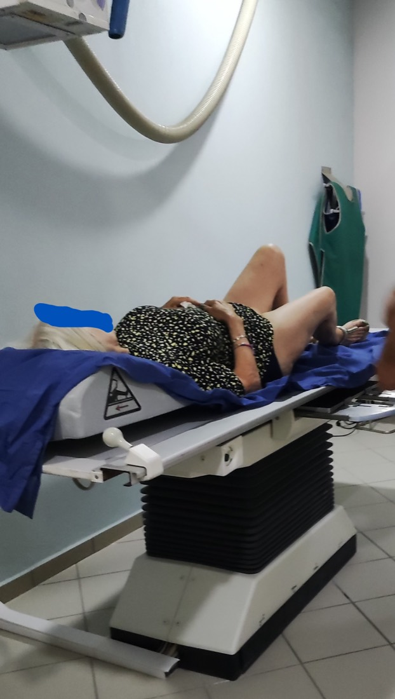

Ολιστική Διάγνωση
Κλινική εξέταση, ιστορικό και σαφής θεραπευτικός στόχος πριν από κάθε παρέμβαση.
Ορθοπαιδική φροντίδα που συνδυάζει σύγχρονη διάγνωση, συντηρητικές και χειρουργικές λύσεις, βιορυθμιστική ιατρική και αναγεννητικές θεραπείες με βάση το ιστορικό και τις ανάγκες κάθε ασθενή.

«Στόχος δεν είναι απλώς η καταστολή του συμπτώματος, αλλά η αντιμετώπιση του αιτίου της πάθησης.»
Ο Dr. Ιωάννης Κοντομάνης είναι Χειρουργός Ορθοπαιδικός & Ορθοπαιδικός Παίδων, απόφοιτος της Ιατρικής Σχολής του Εθνικού & Καποδιστριακού Πανεπιστημίου Αθηνών (ΕΚΠΑ), με μεταπτυχιακή εξειδίκευση στη Χειρουργική Ορθοπαιδική από το Πανεπιστήμιο Αθηνών και MSc Τραυματολογίας & Επείγουσας Ιατρικής.
Η εκπαίδευσή του περιλαμβάνει εξειδίκευση στην Αθλητική Ιατρική (Νοσοκομείο ΚΑΤ), στην Παιδο-Ορθοπαιδική (Νοσοκομείο Παίδων), στην Αρθροσκοπική Χειρουργική (Πανεπιστήμιο Γενεύης) και στη Ρομποτική Χειρουργική (Πανεπιστημιακό Νοσοκομείο Balgrist, Πανεπιστήμιο Ζυρίχης), καθώς και διεθνές δίπλωμα Ιατρικού Βελονισμού ICMART και μετεκπαίδευση στην οξυγονο-οζονοθεραπεία και στις παθήσεις της σπονδυλικής στήλης (Inselspital, Βέρνη). Μέλος του Κολλεγίου Ελλήνων Ορθοπαιδικών Χειρουργών (Κ.Ε.Ο.Χ.) και της Ε.Ε.Χ.Ο.Τ., συνδυάζει την κλασική συντηρητική με τη χειρουργική ορθοπαιδική, για μια πραγματική, ολιστική αντιμετώπιση του ασθενή.
Κάθε ραντεβού είναι εξατομικευμένο. Επιλέξτε μια υπηρεσία για αναλυτική ενημέρωση.
Ιατρικό όζον (O₂–O₃) με ισχυρή αντιφλεγμονώδη, αναλγητική και αντιοξειδωτική δράση για μυοσκελετικά σύνδρομα, δισκοκήλες και αρθροπάθειες.
Μάθετε περισσότεραPRP και βλαστοκύτταρα που αξιοποιούν τα ίδια τα κύτταρα του σώματος για επούλωση και αναγέννηση χόνδρου, τενόντων και οστού.
Μάθετε περισσότεραΣυντηρητική, ολιστική αντιμετώπιση δισκοκήλης, ριζοπάθειας, οσφυαλγίας και ισχιαλγίας — με στόχο την αποφυγή του χειρουργείου όπου είναι εφικτό.
Μάθετε περισσότεραΟλιστική διαχείριση της φθοράς των αρθρώσεων με υαλουρονικό, PRP, οζονοθεραπεία και RF — και αρθροπλαστική όταν πραγματικά χρειάζεται.
Μάθετε περισσότεραΠρόληψη, θεραπεία και αποκατάσταση αθλητικών τραυματισμών, με βιολογικές θεραπείες και ελάχιστα επεμβατική αρθροσκόπηση (MIS).
Μάθετε περισσότεραΟμοτοξικολογία & βιορύθμιση: αντιμετώπιση του αιτίου της πάθησης, όχι μόνο του συμπτώματος, μέσω αποτοξίνωσης και φυσικής αυτοΐασης.
Μάθετε περισσότεραΗ ολιστική ιατρική δεν αντικαθιστά την ορθοπαιδική ακρίβεια. Τη συμπληρώνει με ευρύτερη αξιολόγηση του ασθενή.
Κλινική εξέταση, ιστορικό και σαφής θεραπευτικός στόχος πριν από κάθε παρέμβαση.
Έμφαση σε μη χειρουργικές θεραπείες όταν η πάθηση και η λειτουργική εικόνα το επιτρέπουν.
Δίνεται έμφαση σε ελάχιστα επεμβατικες μεθόδους (MIS), και σε κάθε περίπτωση προηγείται ενδελεχής ενημέρωση και αμέσως μετά εφαρμόζεται πρόγραμμα αποκατάστασης.
Οι αξιολογήσεις των ασθενών του ιατρείου στο επίσημο Google Business Profile.
[ Προσθέστε εδώ πραγματική κριτική ασθενή από το Google Business Profile του ιατρείου. ]
[ Προσθέστε εδώ πραγματική κριτική ασθενή από το Google Business Profile του ιατρείου. ]
[ Προσθέστε εδώ πραγματική κριτική ασθενή από το Google Business Profile του ιατρείου. ]
Το ιατρείο δέχεται Δευτέρα έως Παρασκευή κατόπιν ραντεβού και Σάββατο–Κυριακή κατόπιν συνεννοήσεως, ενώ λειτουργεί όλο το 24ωρο για επείγοντα ορθοπαιδικά, παιδο-ορθοπαιδικά και χειρουργικά περιστατικά. Η διάρκεια κάθε ραντεβού εξαρτάται από την πάθηση και το ιστορικό.
Για αξιολόγηση ορθοπαιδικού προβλήματος, συντηρητική αντιμετώπιση, δεύτερη γνώμη ή σχεδιασμό θεραπείας.